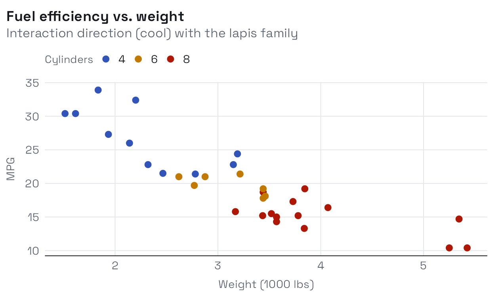
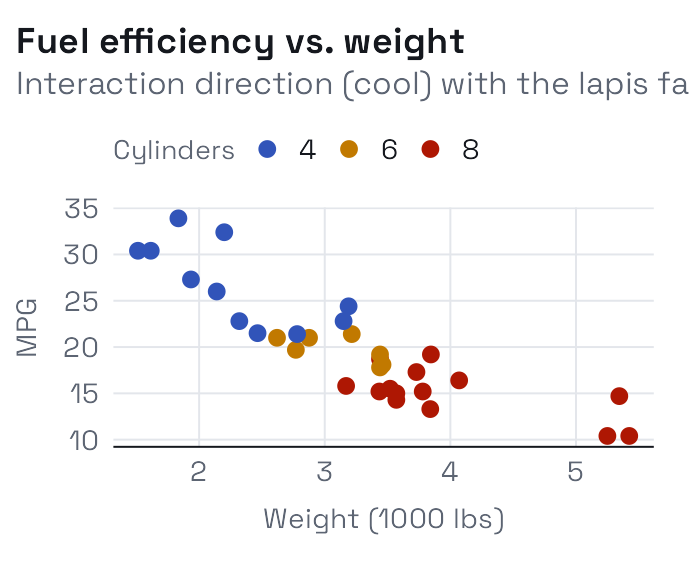
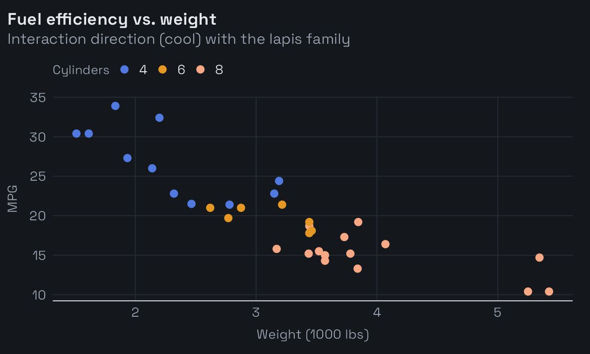
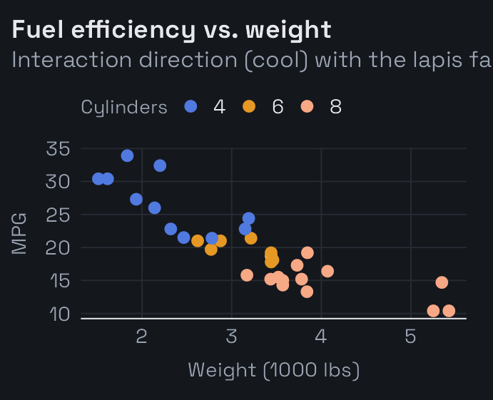

Overview
This vignette is rendered in the Interaction
direction: a cool grey ground, all-grotesk type (Space Grotesk for
display, Hanken Grotesk for body), and dark code blocks. It is the
counterpart to the warm, serif Homage direction shown
in vignette("getting-started"). Switching is a one-line
change – preset: interaction in the vignette YAML, or
theme_albers(preset = "interaction") for plots.
Dark code blocks
Code is rendered on a dark panel with light syntax tokens, while
inline code like neighbor_graph() stays a light chip so it
reads inside body text.
m <- matrix(rnorm(40), 8, 5)
round(cor(m), 2)
#> [,1] [,2] [,3] [,4] [,5]
#> [1,] 1.00 -0.06 0.35 0.69 0.05
#> [2,] -0.06 1.00 0.23 0.24 -0.27
#> [3,] 0.35 0.23 1.00 0.60 0.19
#> [4,] 0.69 0.24 0.60 1.00 -0.41
#> [5,] 0.05 -0.27 0.19 -0.41 1.00TIP: The dark code block is part of the Interaction direction. In Homage the same block is a light cream panel – the syntax colours adapt to stay legible on either ground.
Tables
knitr::kable(head(mtcars[, c("mpg", "wt", "hp", "cyl")]), caption = "A small table on the cool ground.")| mpg | wt | hp | cyl | |
|---|---|---|---|---|
| Mazda RX4 | 21.0 | 2.620 | 110 | 6 |
| Mazda RX4 Wag | 21.0 | 2.875 | 110 | 6 |
| Datsun 710 | 22.8 | 2.320 | 93 | 4 |
| Hornet 4 Drive | 21.4 | 3.215 | 110 | 6 |
| Hornet Sportabout | 18.7 | 3.440 | 175 | 8 |
| Valiant | 18.1 | 3.460 | 105 | 6 |
A plot on the matching ground
The plot’s background is the same cool grey as the page, so the figure sits seamlessly in the article rather than floating on a mismatched panel.
mtcars |>
ggplot(aes(wt, mpg, color = factor(cyl))) +
geom_point(size = 2.4) +
albersdown::scale_color_albers() +
labs(
title = "Fuel efficiency vs. weight",
subtitle = "Interaction direction (cool) with the lapis family",
x = "Weight (1000 lbs)", y = "MPG", color = "Cylinders"
)


